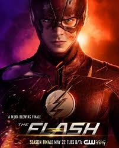
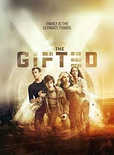
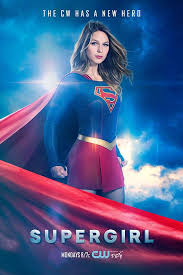

SUPERHERO FICTION
The Flash (2014- )
"Your can't outrun yourself."

Barry Allen is a Central City police forensic scientist with a reasonably happy life, despite the childhood trauma of a mysterious red and yellow lightning killing his mother and framing his father. All that changes when a massive particle accelerator accident leads to Barry being struck by lightning in his lab. Coming out of coma nine months later, Barry and his new friends at S.T.A.R labs find that he now has the ability to move at superhuman speed. Furthermore, Barry learns that he is but one of many affected by that event, most of whom are using their powers for evil. Determined to make a difference, Barry dedicates his life to fighting such threats, as The Flash. While he gains allies he never expected, there are also secret forces determined to aid and manipulate him for their own agenda.
Genres : Action,Adventure,Drama,Sci-fi
No. of Seasons: 6
Available on Disney+Hotstar
Review: 7.7/10 ⭐
Arrow (2012-2020)
"Innocent and not guilty are two different things."

Oliver Queen and his father are lost at sea when their luxury yacht sinks, apparently in a storm. His father dies, but Oliver survives for five years on an uncharted island and eventually returns home. But he wasn't alone on the island where he learned not only how to fight and survive but also of his father's corruption and unscrupulous business dealings. He returns to civilization a changed man, determined to put things right. He disguises himself with the hood of one of his mysterious island mentors, arms himself with a bow and sets about hunting down the men and women who have corrupted his city.
Genres : Action,Crime,Adventure,Drama,Sci-fi
No. of Seasons: 8
Available on Netflix
Review: 7.6/10 ⭐
Agents of S.H.I.E.L.D. (2013-2020)
"Not all Heroes are Super."
After the Battle of New York, the world has changed. It now knows not only about the Avengers, but also the powerful menaces that require those superheroes and more to face them. In response, Phil Coulson of the Strategic Homeland Intervention, Enforcement and Logistics Division assembles an elite covert team to find and deal with these threats wherever they are found. With a world rapidly becoming more bizarre and dangerous than ever before as the supervillains arise, these agents of S.H.I.E.L.D. are ready to take them on.
Genres : Action,Adventure,Drama,Sci-fi,Thriller
No. of Seasons: 6
Available on Netflix
Review: 7.5/10 ⭐
The Gifted (2017-2019)
"How do you create an ordinary life for an extraordinary girl."

The Gifted focuses on a suburban couple (Stephen Moyer, Amy Acker) whose ordinary lives are rocked by the sudden discovery that their children possess mutant powers. Forced to go on the run from a hostile government, the family joins up with an underground network of mutants and must fight to survive.
Genres : Action,Fantasy,Drama,Sci-fi
No. of Seasons: 2
Available on Disney+hotstar
Review: 7.4/10 ⭐
Iron Fist (2017-2018)
"A Man fight with his mouth when his fists are lacking"

Danny Rand returns to New York City after being missing for years, trying to reconnect with his past and his family legacy. He fights against the criminal element corrupting his world around him with his incredible kung-fu mastery and ability to summon the awesome power of the fiery Iron Fist.
Genres : Action,Crime,Fantasy,Drama,Sci-fi
No. of Seasons: 2
Available on Netflix
Review: 6.5/10 ⭐
Supergirl(2015-)
"It's not a bird. It's not a plane. It's not a man. It'a Supergirl"

Years ago, Krypton was about to explode and Kal-El was sent to Earth to escape that fate. However, his older cousin, Kara, was also intended to accompany the infant as his protector. Unfortunately, Kara was accidentally diverted into the timeless Phantom Zone for years before finally arriving on Earth decades later and found by her cousin who had grown into Superman. Years later, Kara Danvers is a young professional adrift in a thankless job until a fateful crisis ignites a sense of purpose using Kryptonian powers she had long hidden. Inspired, Kara decides to emulate her cousin's superheroic ways, only to find her foster sister introducing her to the secret Department of Extra-Normal Operations, dedicated to fighting alien menaces including those Kara inadvertently led to Earth. Now with such help, the Maid of Might takes her place as Earth's newest champion with new friends and enemies challenging her world.
Genres : Action,Adventure,Drama,Sci-fi
No. of Seasons: 5
Available on Netflix
Review: 6.3/10 ⭐
Back